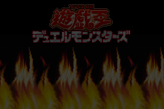

Yu-Gi-Oh! Duel Monsters 6 Expert 2 (Japan)
SRAM 256K Save Format Spec gbakit Built-In 🎮 4P Link
Cartridge Identity
- Game Code
AY6J(FamilyAY6)- Header Title
KCEJDM6EX2- Maker / Revision
A4/ rev0- ROM Size
- 16.0 MiB (16,777,216 B)
- Save Media
SRAM 256K- SHA-256
6b75a36a9da1d1575c976dc6954222061fed15c6cdd4b8081832b810b0b82b02- Engine / SDK Group
comm-014(25 families)
Screenshots


Link Cable & Multiplayer Communications
This title contains detected communication capabilities: 🎮 4P Link.
Detailed protocol specifications, SIO registers, Joybus commands, and MultiBoot sequences are documented in the Link & Multiplayer Reference.
- Multi-Player SIO (4P)
- 16-bit ring network · SIOCNT (
0x04000128) literals:0x01f128,0x075364,0x07697c· SIODATA32/SIOMULTI0 (0x04000120) literals:0x079540,0x07cb34,0x07cb64
Battery Save Format Specification
Open Full Save Format SpecDownload save-format.json
- Specification Coverage
- 3 mapped fields · 0 verified checksum(s) · Confidence: HIGH
- gbakit Built-In Support
- Built-in (AY6J)
gbakit save verify AY6J save.sav
gbakit save decode AY6J save.sav
gbakit save fix AY6J damaged.sav -o repaired.savObserved Battery Save Layout
- Fill Byte & Active Size
0xFFfill · 2–2 / 32,768 B active (entropy 1.00 bits/B)- Active Offset Ranges
0x21D4–0x21D5(1 total)- ASCII Magic / Headers
- None detected
- Observed Variable Regions
- 0 bytes across 0 spans: None
- Candidate Checksum/Counter Spans
- None
ROM Assets, Compression & Audio
- BIOS Compression
- LZ77 (
0x10): 0 streams · RLE (0x30): 0 streams - ROM Pointer Tables
- 30 tables (0 pointing to validated compressed streams)
- SDK Backup Tags
SRAM_V112
Asset Map (formatkit.asset-map.v1)
Download AY6J-r0-6b75a36a9da1d157.asset-map.json.gz (126,846 B (123.9 KiB)) Verified PASS · 27.30% coverage
| Metric | Bytes / Value | Entries |
|---|---|---|
| Identified | 593,809 B (579.9 KiB) (3.54%) | 1,162 |
| Mapped | 0 B (0.00%) | 0 |
| Opaque | 3,986,188 B (3.80 MiB) (23.76%) | 1 |
| Unknown | 12,197,219 B (11.63 MiB) (72.70%) | 1,118 |
| Total ROM Size | 16,777,216 B (16.00 MiB) | 2,281 |
| Coverage % | 27.30% | — |
| Entries w/ Code Refs | 1,147 / 2,281 (50.28%) | — |
Top Identified Formats: audio.konami-sample (62 · 482,122 B (470.8 KiB)) · gfx.gba-palette (1,098 · 91,776 B (89.6 KiB)) · compress.bios-rle (1 · 19,719 B (19.3 KiB)) · gba.rom-header (1 · 192 B)
Largest unknown Extents (Headerless / Custom Asset Candidates)
| Offset | Size | Shannon Entropy | Code Refs |
|---|---|---|---|
0x002A9D80 | 7,147,792 B (6.82 MiB) | 6.064 bits/B | 0 |
0x0020D980 | 606,856 B (592.6 KiB) | 5.534 bits/B | 0 |
0x0017C568 | 594,936 B (581.0 KiB) | 0.329 bits/B | 0 |
0x009ADA90 | 277,116 B (270.6 KiB) | 6.723 bits/B | 1 |
0x00BF0D04 | 134,112 B (131.0 KiB) | 2.453 bits/B | 0 |
gzip -dk AY6J-r0-6b75a36a9da1d157.asset-map.json.gz && gbakit map verify rom.gba AY6J-r0-6b75a36a9da1d157.asset-map.json
gbakit assets export rom.gba --asset-map AY6J-r0-6b75a36a9da1d157.asset-map.json -o out/Text, Fonts & Scene Data
- Primary Text Encoding
- Shift-JIS (uncompressed) (
24ASCII strings ·200Shift-JIS runs) - Font & VWF Indicators
- VWF Width Table 1bpp Font · BIOS SWIs: BitUnPack
0x10:15· LZ770x11/12:20· Huffman0x13:7· RLE0x14/15:26 - Scene & Packaging
22ROM pointer tables (≥32 entries,4≥200) ·62relativeu32TOCs ·261OAM metasprite hits · FourCC:KCEJ
Hardware MMIO Subsystems
ppu_display0x80018c8save_bus_sram_flash0x8078970,0x80792ec